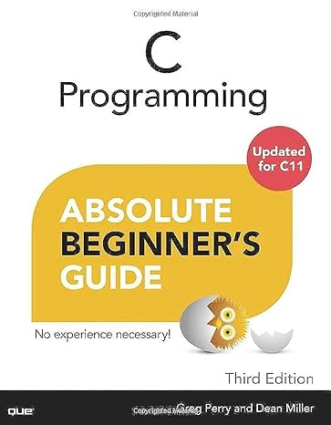
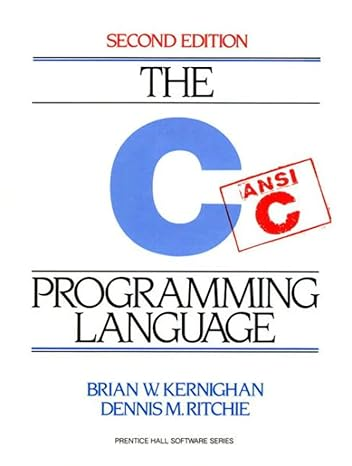

[2024 Spring] Computer Programming and Labs
Course Information
| Course | Computer Programming and Labs | Department | Computer Science and Engineering |
|---|---|---|---|
| Office Hours | TBD | Course No. | 36339-04 |
| Hours | 3.0 | Academic Credit | 3.0 |
| Professor | Yoon, Myung Kuk | Office | Jinseonmi-Gwan, 213 |
| Telephone | (82)-2-3277-3819 | myungkuk.yoon at ewha.ac.kr | |
| Value of Competence | Pursuit of Knowledge (70), Creative Convergence (30) | Keyword | Programming, C-language, Coding |
| Class Time | (Wed) 15:30 ~ 16:45 (Fri) 12:30 ~ 13:45 | Class Room | ENGA122 |
Course Description
This course introduces the basics of programming using the C language, a robust and widely adopted programming language, especially in the development of system software, embedded systems, and applications where performance is crucial.
* Lecture materials will be provided in English.Prerequisites
NONE
Course Format
| Lecture | Discussion/Presentation | Experiment/Practicum | Field Study | Other |
|---|---|---|---|---|
| 60% | 0% | 40% | 0% | 0% |
Course Objectives
In this class, students will be introduced to:
- main() function
- printf()/scanf() functions
- Variables
- Constants
- String
- Array
- Basic Arithmetic
- if...else statements
- while loop
- for loop
- Functions
- Files
- More if time permits
Evaluation System
Relative + Absolute Evaluation
| Midterm Exam | Final Exam | Quizzes | Presentations | Projects | Assignment | Participation | Other |
|---|---|---|---|---|---|---|---|
| 30% | 30% | 0% | 0% | 0% | 40% | 0% | 0% |
*Evaluation of group projects may include peer evaluations. Explain of evaluation system
- About 35% of students: A
- About 45% of students: B
- About 20% of students: C and below
- If your total score does not exceed 30%, you will get an "F" regardless of the percentage above.
- If you are absent more than five times, you will get an "F."
- If you are late twice, you are considered absent once.
- The course is specifically designed for freshmen students; hence, absences related to job positions or interviews cannot be accepted as excuses.
- Complete your assignments and exams independently. Any instances of plagiarism, whether from fellow students or online sources, will result in an automatic 'F' in this course, regardless of your current standing.
Required Materials
-

C Programming: Absolute Beginner's Guide
Greg Perry and Dean Miller Edition: Third (3E) ISBN-13: 978-0789751980 ISBN-10: 0789751984
Supplementary Materials
-

C Programming Language
Brian Kernighan and Dennis Ritchie Edition: Second (2E) ISBN-13: 978-0131103627 ISBN-10: 0131103628
Optional Additional Readings
NONE
Course Contents
| Week | Date | Topics & Materials | Assignement & Quiz |
|---|---|---|---|
| Week #01 | 2024-03-06 (Wed) | CH #00: Computer Programming and Labs | |
| 2024-03-08 (Fri) | CH #01: What Is C Programming, and Why Should I Care? | ||
| Week #02 | 2024-03-13 (Wed) | CH #02: Writing Your First C Program | |
| 2024-03-15 (Fri) | CH #03: What Does This Do? Clarifying Your Code with Comments | ||
| Week #03 | 2024-03-20 (Wed) | NO CLASS | |
| 2024-03-22 (Fri) | CH #04: Your World Premiere—Putting Your Program’s Results Up on the Screen CH #05: Adding Variables to Your Programs |
||
| Week #04 | 22024-03-27 (Wed) | CH #06: Adding Words to Your Programs | |
| 2024-03-27 (Wed) | CH #07: Making Your Programs More Powerful with #include and #define | MAKE UP CLASS [18:30 ~ 19:45] | |
| 2024-03-29 (Fri) | CH #08: Interacting with Users | ||
| Week #05 | 2024-04-03 (Wed) | CH #09: Crunching the Numbers—Letting C Handle Math for You | |
| 2024-04-05 (Fri) | CH #10: Powering Up Your Variables with Assignments and Expressions | ||
| Week #06 | 2024-04-10 (Wed) | NO CLASS | National Assembly Election |
| 2024-04-12 (Fri) | CH #11: The Fork in the Road—Testing Data to Pick a Path | ||
| Week #07 | 2024-04-17 (Wed) | CH #12: Juggling Several Choices with Logical Operators | |
| 2024-04-19 (Fri) | CH #13: A Bigger Bag of Tricks—Some More Operators for Your Programs | ||
| Week #08 | 2024-04-24 (Wed) | CH #14: Code Repeat—Using Loops to Save Time and Effort | |
| 2024-04-24 (Wed) | MIDTERM EXAM REVIEW | MAKE UP CLASS [Recorded Lecture] | |
| 2024-04-26 (Fri) | CH #15: Looking for Another Way to Create Loops | ||
| 2024-04-27 (Sat) | MIDTERM EXAM | MAKE UP CLASS [09:00 ~ 10:15] | |
| Week #09 | 2024-05-01 (Wed) | NO CLASS | LABOR DAY |
| 2024-05-03 (Fri) | CH #16: Breaking in and out of Looped Code | ||
| Week #10 | 2024-05-08 (Wed) | CH #17: Making the case for the switch Statement | |
| 2024-05-10 (Fri) | CH #18: Increasing Your Program’s Output (and Input) | ||
| Week #11 | 2024-05-15 (Wed) | CH #19: Getting More from Your Strings | BUDDHA's BIRTHDAY [Recorded Lecture] |
| 2024-05-17 (Fri) | CH #20: Advanced Math (for the Computer, Not You!) | ||
| Week #12 | 2024-05-22 (Wed) | CH #21: Dealing with Arrays | |
| 2024-05-24 (Fri) | CH #22: Searching Arrays | ||
| Week #13 | 2024-05-29 (Wed) | CH #23: Alphabetizing and Arranging Your Data | |
| 2024-05-31 (Fri) | NO CLASS | A FOUNDATION DAY | |
| Week #14 | 2024-06-05 (Wed) | CH #24: Solving the Mystery of Pointers | |
| 2024-06-07 (Fri) | CH #25: Arrays and Pointers | ||
| Week #15 | 2024-06-12 (Wed) | CH #26: Maximizing Your Computer’s Memory | |
| 2024-06-14 (Fri) | Semester Summary | ||
| 2024-06-15 (Sat) | FINAL EXAM | MAKE UP CLASS [09:00 ~ 10:15] | |
| Week #16 | 2024-06-19 (Thu) | NO CLASS | |
| 2024-06-21 (Fri) | Final Exam Review (Nonmandatory) |
Course Policies
*For laboratory courses, all students are required to complete lab safety training.
Special Accommodations
*According to the University regulation #57, students with disabilities can request special accommodation related to attendance, lectures, assignments, and/or tests by contacting the course professor at the beginning of semester. Based on the nature of the students’ requests, students can receive support for such accommodations from the course professor and/or from the Support Center for Students with Disabilities (SCSD).
Extra Information
The contents of this syllabus are not final—they may be updated.